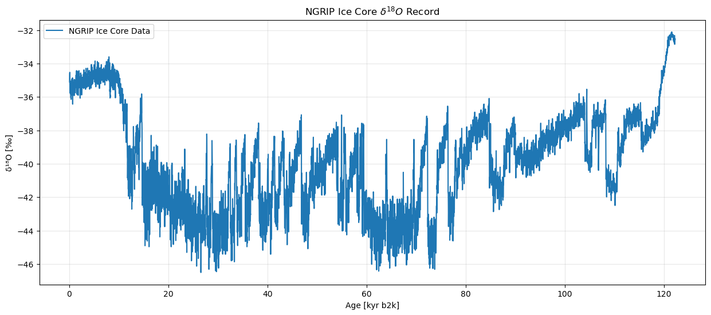

import ammonyte as amtGetting Started with Ammonyte
Installation
Install Ammonyte using pip:
pip install ammonyteImporting the Package
The standard convention is to import Ammonyte as amt:
Loading a Time Series
The central object in Ammonyte is ammonyte.Series. It extends pyleoclim.Series and serves as the starting point for all analyses.
Use the Series.from_csv() method to load a time series from a CSV file. Throughout the Ammonyte tutorials we use the NGRIP (North Greenland Ice Core Project) dataset, which contains high-resolution \(\delta^{18}O\) isotope measurements spanning the last glacial period. This dataset is well-suited for studying abrupt climate transitions such as Dansgaard-Oeschger events.
Key dataset features: - Proxy variable: \(\delta^{18}O\) isotope measurements - Units: per mil (‰) - Time scale: Thousands of years before present (kyr b2k)
ngrip = amt.Series.from_csv('../ammonyte/data/NGRIP.csv')
ngripTime axis values sorted in ascending order
Time axis values sorted in ascending order
{'label': 'NGRIP Ice Core Data'}None
Age [kyr b2k]
0.05 -35.11
0.07 -34.65
0.09 -34.53
0.11 -35.29
0.13 -35.02
...
122.19 -32.85
122.21 -32.66
122.23 -32.66
122.25 -32.51
122.27 -32.56
Name: δ¹⁸O [‰], Length: 6112, dtype: float64Exploring the Series
Once loaded, you can inspect the key metadata attributes of the series:
print(f"Label: {ngrip.label}")
print(f"Value name: {ngrip.value_name}")
print(f"Value unit: {ngrip.value_unit}")
print(f"Time name: {ngrip.time_name}")
print(f"Time unit: {ngrip.time_unit}")
print(f"Time range: {ngrip.time.min():.2f} – {ngrip.time.max():.2f} {ngrip.time_unit}")
print(f"Data points: {len(ngrip.time)}")Label: NGRIP Ice Core Data
Value name: δ¹⁸O
Value unit: ‰
Time name: Age
Time unit: kyr b2k
Time range: 0.05 – 122.27 kyr b2k
Data points: 6112Visualizing the Series
Since ammonyte.Series inherits from pyleoclim.Series, you can use the .plot() method directly to visualize the time series:
fig, ax = ngrip.plot(figsize=(15, 6))
ax.set_title('NGRIP Ice Core $\delta^{18}O$ Record')
ax.grid(True, alpha=0.3)
Conclusion
This notebook shows the common entry point for every Ammonyte workflow: loading a record with Series.from_csv(), inspecting its metadata, and visualizing it, all in just a few lines of code. The resulting Series object is exactly what gets passed into kstest(), ruptures(), or the LERM workflow in the following tutorials — so the same loaded series can be reused across all three detection methods without any extra setup or conversion.
Next Steps
Now that you have a Series loaded and visualized, you can apply any of the three transition detection methods:
- KS Test tutorial: detect transitions using the augmented Kolmogorov-Smirnov test
- LERM tutorial: detect transitions using Laplacian Eigenmaps of Recurrence Matrices
- Ruptures tutorial: detect transitions using change-point detection algorithms